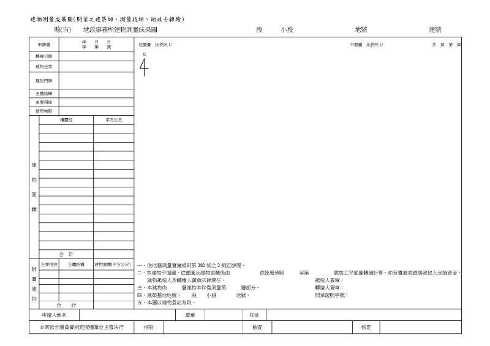

建物標示圖
內文
本日專欄為各位說明一下土地登記有關「建物標示圖」之概念標示圖如下：
[圖片1]
首先，根據土地登記規則第78條規定，申請建物所有權第一次登記前，應先向登記機關申請建物第一次測量。但在中華民國一百零二年十月一日以後領有使用執照之建物，檢附依使用執照竣工平面圖繪製及簽證之建物標示圖辦理登記者，不在此限。
因此，原本建物所有權第一次登記都要先經過建物第一次測量，實務上花費時間大概兩者加起來要一個月出頭，但現在持建物標示圖辦理登記就不需要先經過測量，直接辦理建物所有權第一次登記，時間大概20天左右。換言之，為落實簡政便民係以建物標示圖取代建物測量成果圖，其目的係考量建物使用執照及其竣工平面圖業經建築主管機關依法審核許可，且建築師、測量技師等專門職業及技術人員依法得受託辦理建物測繪業務，並對於承辦業務所為之行為應負法律責任，則經該等專業人士依使用執照竣工平面圖繪製建物標示圖並簽證者，應得免再申請建物第一次測量，並據以辦理建物所有權第一次登記。
土地登記規則第79條則規定，前條之建物標示圖，應由開業之建築師、測量技師或其他依法規得為測量相關簽證之專門職業及技術人員辦理繪製及簽證。
前項建物標示圖，應記明本建物平面圖、位置圖及建物面積確依使用執照竣工平面圖繪製，如有遺漏或錯誤致他人受損害者，建物起造人及繪製人願負法律責任等字樣及開業證照字號，並簽名或蓋章。
考試的同學特別要注意：
-
建物標示圖誰可以繪製及簽證：開業之建築師、測量技師或其他。
-
建物測量成果圖誰可以轉繪：開業之建築師、測量技師、地政士或其他。
文章圖片
